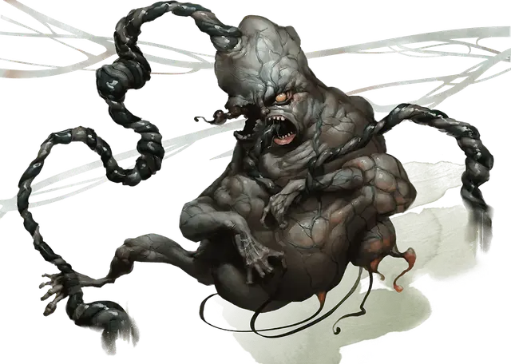

Атропал
Atropal
Огромная Нежить (Титан), нейтрально-злая

Класс Доспеха 7
Хиты 225 (18к12 + 108)
Скорость 0 футов, летая 50 футов (парение)
| мод | спас | ||
|---|---|---|---|
| СИЛ | 19 | +4 | +4 |
| ЛОВ | 5 | −3 | −3 |
| ТЕЛ | 22 | +6 | +11 |
| мод | спас | ||
|---|---|---|---|
| ИНТ | 25 | +7 | +7 |
| МДР | 19 | +4 | +9 |
| ХАР | 24 | +7 | +7 |
Уязвимость к урону излучение
Иммунитет к урону некротическая энергия, холод; дробящий, колющий, рубящий от немагических атак
Иммунитет к состояниям отравление, сбивание с ног, паралич, испуг, истощение
Чувства истинное зрение 120 футов, тёмное зрение 120 футов, пассивное Восприятие 14
Языки понимает Небесный, но произносит только нецензурную чепуху.
Опасность 13 (10000 опыта)
Бонус мастерства +5
Особенности
Сопротивление магии. . Атропал получает преимущество на спасброски против заклинаний и прочих магических эффектов.
Аура негативной энергии. . Существа в радиусе 30 футов от атропала не могут восстановить хиты, и любое существо, которое начинает свой ход в пределах 30 футов от атропала, получает 10 (3к6) урона некротической энергией.
Если атропал поражён мечом головорубом [vorpal sword] , владелец может отрезать пуповину атропала вместо того, чтобы нанести урон. Если его пуповина отрезана, то атропал теряет эту особенность.
Аура сопротивления изгнанию. . Атропал и любая другая нежить в пределах 30 футов от него совершают с преимуществом спасброски от всех эффектов, изгоняющих нежить.
Действия
Касание. . Рукопашная атака оружием: +9 к попаданию, досягаемость 5 футов, одна цель. Попадание: 10 (3к6) урона некротической энергией.
Луч холода. . Дальнобойная атака заклинанием: +12 к попаданию, дистанция 120 футов, одна цель. Попадание: 21 (6к6) урона холодом.
Вытягивание жизни. . Атропал выбирает одно существо, которое видит в пределах 120 футов от себя. Цель должна преуспеть в спасброске Телосложения Сл 19, получая 36 (8к8) урона некротической энергией при провале, или половину этого урона при успехе. Атропал восстановит количество хитов, равное половине нанесённого урона.
Призыв призрака (перезарядка 6). . Атропал вызывает призрака [wraith], который материализуется в пределах 30 футов от него в свободном пространстве, которое атропал может видеть. Призрак [wraith] подчиняется командам призывателя и не может контролироваться каким-либо другим существом. Призрак [wraith] исчезает, когда его хиты падают до 0 или, когда призыватель умирает.
Легендарные действия
Атропал может совершить 3 легендарных действия, выбирая из представленных ниже вариантов. За один раз можно использовать только одно легендарное действие, и только в конце хода другого существа. Атропал восстанавливает использованные легендарные действия в начале своего хода.
Касание. . Атропал совершает атаку касанием.
Луч холода (стоит 2 действия). . Атропал использует Луч холода.
Вопль (стоит 3 действия). . Атропал выпускает иссушающий вопль. Любое существо в радиусе 120 футов от атропала, которое может слышать вопль, должно преуспеть в спасброске Телосложения Сл 19 или получить 1 уровень истощения.
Описание
Атропал – это отвратительное, незавершённое творение злого бога, брошенное на произвол судьбы и давно заброшенное. Поскольку атропал никогда не был по-настоящему живым, его нельзя поднять из мёртвых или воскресить любыми способами. Даже божественное вмешательство не может вдохнуть истинную жизнь в это отвратительное, ужасающее существо.
Атропал уродлив и не закончен. Его влажное, сморщенное и раздутое тело увенчано большой, безволосой головой с остеклянелыми глазами. Из его рта постоянно текут слюни и вонючая сукровица. Его руки очень тонкие, с крошечные ладонями, заканчивающимися жёсткими, сформированными ногтями.
Атропал никогда не ходит, но всегда парит, а его атрофированные ноги, бесполезно висят под ним.
Подключение негативной энергии. Кажется, что сморщенный пуповина атропала тянется в никуда, но на самом деле она связана с Негативным Планом. Эта связь даёт ему власть над смертью и не-жизнью.
Пуповина может быть разрублена мечом головорубом [vorpal sword] или другим похожим оружием, и это ослабит связь атропала с Негативным Планом.
Атропал может воззвать к останкам существ, которые умерли на Негативном Плане, и они проявляются как призраки [wraiths]. Эти слуги могут существовать вне Негативного Плана только благодаря силе воли атропала, и они быстро рассеиваются, если уничтожить атропала.
Природа нежити. Атропалу не нужен воздух, пища, питье или сон.